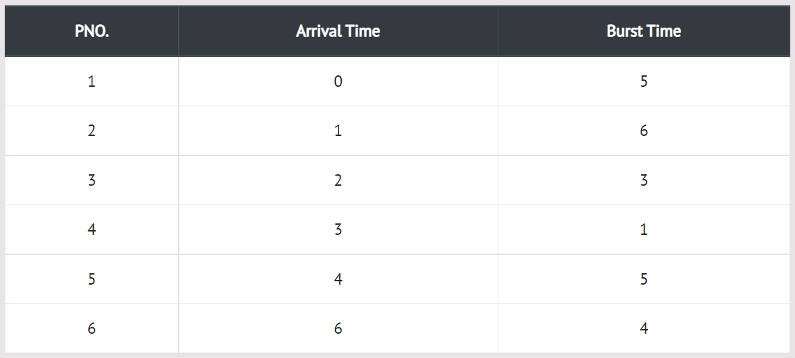

Round Robin scheduling algorithm is one of the most popular scheduling algorithm which can actually be implemented in most of the operating systems. This is the preemptive version of first come first serve scheduling. The Algorithm focuses on Time Sharing. In this algorithm, every process gets executed in a cyclic way. A certain time slice is defined in the system which is called time quantum. Each process present in the ready queue is assigned the CPU for that time quantum, if the execution of the process is completed during that time then the process will terminate else the process will go back to the ready queue and waits for the next turn to complete the execution.
In the following example, there are six processes named as P1, P2, P3, P4, P5 and P6. Their arrival time and burst time are given below in the table. The time quantum of the system is 4 units.
Step 0) Initially, at time 0, process P1 arrives which will be scheduled for the time slice 4 units.
Hence in the ready queue, there will be only one process P1 at starting with CPU burst time 5 units.
Step 1) Meanwhile the execution of P1, four more processes P2, P3, P4 and P5 arrives in the ready queue.
P1 has not completed yet, it needs another 1 unit of time hence it will also be added back to the ready queue.
Step 2) During the execution of P2, one more process P6 is arrived in the ready queue. Since P2 has not
completed yet hence, P2 will also be added back to the ready queue with the remaining burst time 2 units.
Step 3) Since P3 has been completed, hence it will be terminated and not be added to the ready queue.
The next process will be executed is P4.
Step 4) The next process in the ready queue is P5 with 5 units of burst time. Since P4 is completed
hence it will not be added back to the queue.
Step 5) P5 has not been completed yet; it will be added back to the queue with the remaining burst time of 1 unit.
Step 6) P1 is completed and will not be added back to the ready queue. The next process P6
requires only 4 units of burst time and it will be executed next.
Step 7) Since P6 is completed, hence it will not be added again to the queue. There are only two processes
present in the ready queue. The Next process P2 requires only 2 units of time.
Step 8) Now, the only available process in the queue is P5 which requires 1 unit of burst time.
Since the time slice is of 4 units hence it will be completed in the next burst.
Step 9) Let's calculate the average waiting time for above example.
The Turnaround time and the waiting time are calculated by using the following formula.
Turn Around Time = Completion Time - Arrival Time Waiting Time = Turnaround time - Burst Time